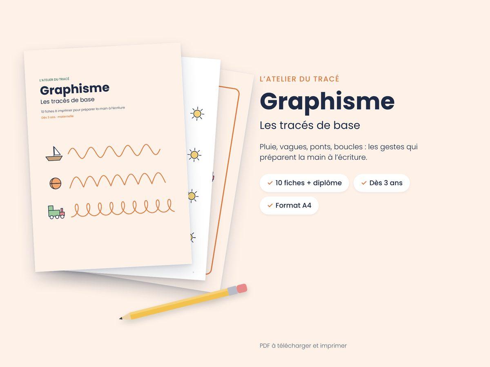
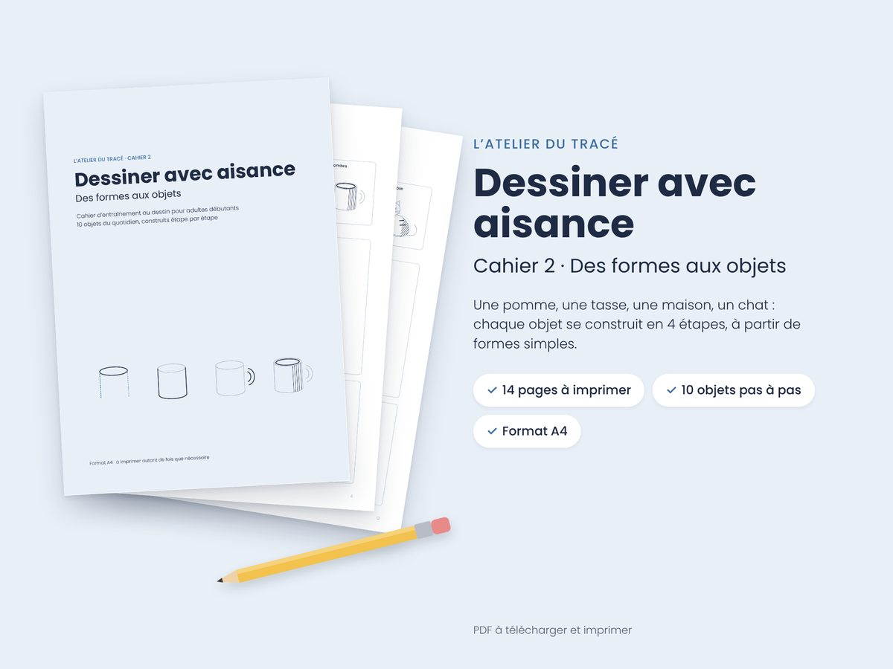
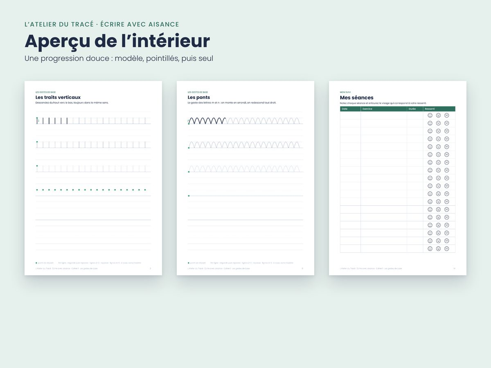

Le blog
Conseils pour écrire et dessiner avec aisance

Écriture adulte
Comment retrouver une belle écriture à l’âge adulte : la méthode qui marche
Ce que dit la recherche, et une méthode en 5 étapes, 10 minutes par jour.

Enfants
Graphisme en maternelle : par où commencer à la maison ?
Pourquoi le graphisme prépare à l’écriture, et dans quel ordre proposer les tracés.

Enfants
Apprendre l’écriture cursive au CP : la méthode de l’école, à la maison
Familles de lettres, règles de la cursive et méthode qui marche, 10 minutes par jour.

Dessin
Apprendre à dessiner quand on débute : par où commencer ?
Le trait, les valeurs, les formes simples et la construction : les 4 bases.

Histoire
L’histoire de l’écriture cursive en France : de la plume d’oie à la police Marelle
Des scribes romains à la plume Sergent-Major, puis au modèle de l’école d’aujourd’hui.

Écriture adulte
De l’école à l’âge adulte : comment notre écriture évolue (et pourquoi elle se dégrade)
Des lettres appliquées du CP à l’écriture personnelle de l’adulte, puis le relâchement.

Écriture adulte
Clavier, écran, téléphone : l’écriture à la main est-elle en train de disparaître ?
Ce que montrent les enquêtes et la recherche sur le recul de l’écriture à la main.

Écriture
Bien tenir son crayon : la bonne prise, la bonne posture et les conseils pour les gauchers
La prise à trois doigts, la posture, la feuille, et 6 conseils pour les gauchers.